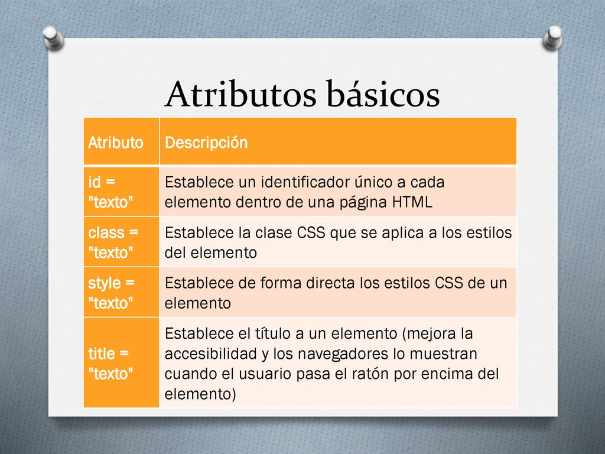
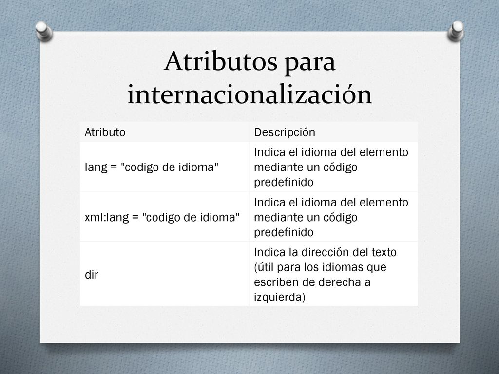

Atributos y valores de las etiquetas basicas de HTML?
Las etiquetas son la estructura básica del HTML. Estas etiquetas o tags se componen y contienen otras propiedades, como son los atributos y el contenido. Existen algunos atributos que afectan al elemento por su presencia en la etiqueta de inicio, como puede ser el atributo ismap para el elemento img.
TIPOS DE ATRIBUTOS
Aunque cada una de las etiquetas HTML define sus propios atributos, encontramos algunos comunes a muchas o casi todas las etiquetas, que se dividen en cuatro grupos según su funcionalidad:
• Atributos básicos: Se utilizan en la mayoría de etiquetas HTML y XHTML, aunque adquieren mayor sentido cuando se utilizan hojas de estilo en cascada (CSS): HTML es un markup language, lo que significa que el texto en una página web está «marcado» con estos

ATRIBUTOS DE INTERNACIONALIZACIÓN O I18N
Estos atributos se utilizan en aquellas páginas que muestran sus contenidos en varios idiomas y las que quieran indicar de forma explícita el idioma de sus contenidos:
Referencia APA imagenes atributos basicos e internacionalización
caracteristicas basicas de HTML. (s. f.). [Imagen]. https://www.google.com/search?q=imagen+de+atributos+basicos+de+html&rlz=1C1CHBF_esCO844CO844&source= lnms&tbm=isch&sa=X&ved=2ahUKEwjC_rr8xOTvAhUGEVkFHT7zDVQQ_AUoAXoECAEQAw&biw=1366&bih=600#imgrc=RWnTgTzId3bcVM
ATRIBUTOS DE EVENTOS
Estos atributos se utilizan en las páginas web que incluyen código JavaScript para realizar acciones dinámicas sobre los elementos de la página. Pueden ser utilizados por: todos los elementos
Referencia APA imagen Atributos de eventos
contenido- pagina web de eltechnobenjamon. (s. f.). [Imagen]. https://www.google.com/search?q=imagen+de+atributos+de+eventosde+html&tbm=isch&ved=2ahUKEwjvpKnOx- TvAhU8QcAGHarjB4AQ2-cCegQIABAA&oq=imagen+de+atributos+de+eventosde+html&gs_lcp=CgNpbWcQA1CW_hlYk6AaYNWiGmgBcAB4AIAB -wGIAagWkgEGMC4xOS4xmAEAoAEBqgELZ3dzLXdpei1pbWfAAQE&sclient=img&ei=2qxpYO_PI7yCgeYPqsefgAg&bih =600&biw=1366&rlz=1C1CHBF_esCO844CO844#imgrc=3ZdLXLHjfm9YRM
ATRIBUTOS DE FOCO
Se le denomina foco o focus, cuando un control o elemento del documento ha sido seleccionado. Cuando ese elemento deja de estar seleccionado, "pierde el foco" y es el nuevo elemento seleccionado el que se dice que tiene "el foco".
Referencia APA imagen Atributos de foco
etpblog: introducción a HTML y características básicas. (s. f.). [Imagen]. https://www.google.com /search?q=atributos+de+foco+de+html&tbm=isch&ved=2ahUKEwiLxcmez-TvAhVYcDABHe9oAMUQ2-cCegQIABAA&oq =atributos+de+foco+de+html&gs_lcp=CgNpbWcQAzoCCAA6BggAEAcQHjoICAAQBxAFEB46BggAEAgQHlCgpgJY9bwCYIr NAmgAcAB4AIAB9QKIAZISkgEHMC42LjQuMZgBAKABAaoBC2d3cy13aXotaW1nwAEB&sclient =img&ei=2bRpYMv0ONjgwbkP79GBqAw&bih=600&biw=1349&rlz=1C1CHBF_esCO844CO844&hl=es-419#imgrc=1G3uS1dgYHEMNM